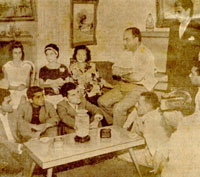
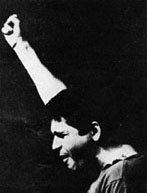
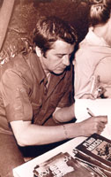
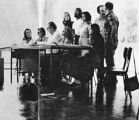
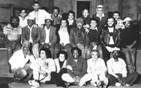

Dados Biográficos
Uma vida
De palhaço de circo a maior dramaturgo do avesso do Brasil. A vida de Plínio Marcos, contada capítulo a capítulo, com a voz dele no centro.
Origens

[Plínio Marcos de Barros nasceu em Santos, em 29 de Setembro de 1935, e faleceu em São Paulo, em 19 de Novembro de 1999. Filho de um bancário (Armando) e de uma dona-de-casa (Hermínia), tinha 4 irmãos e uma irmã.] “A gente veio de origem mais ou menos humilde, mas minha infância foi muito feliz, pelo menos foi muito despreocupada. Morava numa vila de pequenos bancários – na Rua das Antigas Laranjeiras - e foi nessa vila que me criei. A única dificuldade que eu tinha era exatamente o colégio. Eu não suportava a escola. [Grupo Escolar Dona Lourdes Ortiz] Levei quase dez anos para sair do primário. E quando saí já não dava mais para continuar estudando.” “Meu pai tentou me enfiar em todas as profissões possíveis. Ele dizia que, se eu tivesse uma profissão, sempre iria sobreviver.
"Então meu pai me botou de aprendiz de encanador. E eu acabei ficando funileiro. A minha profissão mesmo é funileiro - é o que consta no meu certificado de reservista." [Seu pai, que era espírita, também o colocou para vender livros numa banca de livros espíritas numa praça de Santos. Entre suas múltiplas atividades, inclui-se, ainda, a de estivador no cais do porto de Santos.] “ Para ser franco, eu, quando pequeno, era tido como débil mental. Não conseguia aprender. Meu poder de concentração era nenhum.” [Já adulto, afirmava que tinha sido canhoto na infância e que, pelos métodos educacionais da sua época de criança, fora forçado a usar apenas a mão direita, o que lhe dificultaria o aprendizado, impedindo-o de realizar os trabalhos escolares com a mesma rapidez dos seus colegas. Isso, dizia, teria contribuído para torná-lo alienado do processo de aprendizado. Mas, o fato é que sempre realizava todas as atividades com a mão direita, inclusive escrever. E toda a sua obra foi manuscrita.] “Queria mesmo era ser jogador de futebol. Cheguei até a jogar no juvenil da Portuguesa Santista, no Jabaquara.” “Inclusive entrei para a Aeronáutica seduzido pela idéia de jogar no time dela.” [Começou a jogar na várzea santista, como ponta-esquerda, e era tido como bom jogador.]
↑ voltar ao índiceCirco e Teatro Amador

[Começou a vida profissional como palhaço de circo.] “Eu queria namorar uma moça do circo, que conheci quando o cantor do nosso bairro foi cantar no circo. O pai dela só deixava ela namorar gente do circo. Então eu entrei para o circo. Achei que era mais engraçado do que o palhaço e que eu devia ser palhaço.” “Eu tinha o apelido de Frajola, não porque andasse bem vestido, mas porque tinha saído uma revista em quadrinhos, Mindinho, com um gato chamado Frajola, que sempre queria pegar um passarinho – e eu fui preso roubando um passarinho numa casa, na ocasião em que saiu a revista.” [E usou esse apelido como palhaço de circo, o palhaço Frajola.] “Comecei a ficar mais fixo em circo depois que saí do quartel, com 19 anos. Mas, desde os 16, já estava trabalhando como palhaço.” [Em 1953, percorria o interior paulista com a Companhia Santista de Teatro de Variedades, atuando como palhaço e humorista, e também dirigindo shows.] “Cheguei a ser humorista da Rádio Atlântico e da Rádio Cacique, de Santos”.
“Trabalhei em todos os circos, no Circo dos Ciganos, no Circo do Pingolô e da Ricardina, no Circo Toledo, Circo Rubi, da Aurora Viana e do Carvalhinho. Agora, o primeiro pavilhão em que trabalhei foi o Pavilhão-Teatro Liberdade, que ficou armado cinco anos em Santos [na Avenida Pedro Lessa, Macuco], dando espetáculos todas as noites.” “O circo era um pavilhão-teatro. Tinha a parte dos shows e tinha a parte do teatro. Na primeira parte, a gente fazia os shows: entrava o palhaço, essas coisas todas, os números de circo; e, na segunda, tinha sempre uma peça. Eu fazia vários pequenos papéis. Nunca cheguei a fazer um grande papel, mas sempre com falas, papelzinho de destaque.” [Também começou a se apresentar na TV-5, de Santos, como humorista e como palhaço Frajola, alcançando grande popularidade. Já era apresentado nos shows como “o cômico mais querido da cidade”, ou “o cômico da televisão”.] Em 1958, “a Patrícia Galvão, a Pagu, estava precisando de um cara pra substituir um ator de uma peça infantil que ela estava fazendo [Pluft, o Fantasminha] e que tinha que ser feita no dia seguinte. Me convidaram e eu fui. E lá fiquei conhecendo essa mulher maravilhosa.” “Ficamos amigos de infância.” “... quando encontrei a Pagu, conheci um grupo de intelectuais raríssimo. E recebi uma forte influência desse grupo.” “Todos os domingos a Pagu fazia o Geraldo Ferraz [seu marido] ler uma peça pra nós. Peças como Esperando Godot.” “A gente ficava ouvindo a Pagu falar e aquilo nos despertava para ler, para estudar.” [Nessa época, é membro do Clube de Poesia, do jornal O Diário, de Santos, tendo várias poesias publicadas. Começa, também, a trabalhar ativamente no teatro amador santista, tradicionalmente de boa qualidade. Em 58 e 59, trabalha com sucesso como ator e/ou diretor em várias peças: Pluft, o Fantasminha, Verinha e o Lobo, Menina Sem Nome, A Longa Viagem de Volta, Escurial, O Rapto das Cebolinhas, Jenny no Pomar, Triângulo Escaleno, Fando e Lis.]
↑ voltar ao índiceBarrela

“Houve um caso, em Santos, que me chocou profundamente: um garoto foi preso por uma besteira e, na cadeia, foi currado. Quando saiu, dois dias depois, matou quatro dos caras que estavam com ele na cela. Fiquei tão chocado com esse negócio todo que escrevi a Barrela.” “Juro por essa luz que me ilumina que até então nunca havia me ocorrido escrever uma peça, pois eu não conhecia as grandes peças da dramaturgia nacional, nem universal. Conhecia as peças que eram apresentadas no Pavilhão Liberdade: Paixão de Cristo, O Mundo não me Quis, Rancho Fundo, O Ébrio. Mas, o caso do garoto me comoveu tanto, que eu, depois de andar uns tempos atormentado com a história, a despejei no papel.
Escrevi em forma de diálogo, em forma de espetáculo de teatro, que era o que eu mais conhecia, mas não me preocupei com os erros de português, nem com as palavras. Imaginei o que se passara no xadrez antes, durante e depois de o garoto entrar, coisas que eu conhecia bem de tanto escutar histórias na boca da malandragem. E dei o nome de Barrela, que é a borra que sobra do sabão de cinzas e que, na época, era a gíria que se usava para curra.” “Li a peça pra alguns companheiros do circo e naturalmente eles acharam que eu tinha enlouquecido, se pensava que podia encenar uma peça com aquela linguagem. Ficou por isso mesmo.” “Ninguém quis montar e eu levei para a Pagu, que achou meu diálogo tão poderoso quanto o do Nélson Rodrigues. Ela, então, levou Barrela para o Pascoal Carlos Magno, que estava realizando o Festival Nacional de Teatro de Estudante em Santos. Então, ele fez um puta escarcéu, descobriu um gênio, essas coisas.” “... e no final do festival falou para os jornais que fazia questão que os estudantes montassem a peça.” “Começamos a ensaiar no início do ano de 1959.” “Aí, eu é que fui dirigir, eu que fiz um papel, eu que fiz o cenário, eu que fiz tudo.” [O texto foi enviado para a Censura Federal, que o proibiu. A Patrícia Galvão comunicou-se com o Pascoal Carlos Magno, uma espécie de ministro sem pasta do Governo de Juscelino Kubitschek. Ele, então, enviou um telegrama diretamente do gabinete do presidente dizendo para a polícia reconsiderar a proibição da peça. E o texto foi liberado para uma apresentação, no dia 1º de novembro de 1959, no palco do Centro Português de Santos, ficando depois proibido pela Censura Federal por vinte e um anos.] “No dia seguinte, a cidade só falava da nossa peça. Eu achava tudo lindo e me badalava como gênio, até que, de tanto me encherem, escrevi outra peça, sem ter absolutamente nada pra dizer.” [A peça era Os Fantoches, ou Chapéu sobre Paralelepípedo para Alguém Chutar, reescrita depois como Jornada de um Imbecil até o Entendimento.] “E foi um vexame tão grande, tão grande, que no dia seguinte a Patrícia Galvão [que escrevia crítica de teatro para o jornal A Tribuna de Santos] botou na Tribuna o meu retratão de gravata borboleta e tudo, com uma manchete assim: Esse analfabeto esperava outro milagre de circo.” “Mas, não me acanhei. Estava selado que eu era um autor teatral e eu jurava pra mim mesmo que nem sucessos, nem fracassos me abateriam.”
↑ voltar ao índiceComeço em São Paulo

“Vim pra São Paulo de vez em 1960. Aqui, a primeira viração foi vender coisas de contrabando. Eu ia buscar em Santos e vendia aqui: cigarros americanos, rádio de pilha, esses troços. Fiquei um tempão trabalhando de camelô. Pegava no Largo do Café e vendia na esquina. Álbum de figurinha também. Depois, vi o pessoal do Teatro de Arena, porque eu parava no Bar Redondo. Entrei na Companhia da Jane Hegenberg, no lugar do Milton Bacarelli, montamos um espetáculo que foi um desastre (O Fim da Humanidade). Fiz teatro infantil.” “Foi anunciado um teste para a Companhia Cacilda Becker, um teste de atores para a peça César e Cleópatra, que o Ziembinsky ia dirigir. Fui lá, fui aprovado. Fazia várias pontas: carregador de tapete, guarda egípcio, umas dez coisas. E foi um dos maiores fracassos da Cacilda. Ficamos muito, muito amigos mesmo. Eu trabalhava em duas peças ao mesmo tempo: fazia o primeiro ato de César e Clópatra, na Companhia da Cacilda, e entrava em O Noviço, no Teatro de Arena, no último ato.”
“Depois, [1963] a Cacilda e o Walmor me deram uma colher de chá e fiz o Juca Afogado na peça O Santo Milagroso, do meu camaradinha Lauro César Muniz. Daí veio Onde Canta o Sabiá, e eu fui para o vinagre. A crítica me malhou bem. Peguei meu boné e fui cantar em outra freguesia.” “Nunca tive esse negócio de ser de um grupo, trabalhava onde me deixavam. Como ator, como administrador, como qualquer coisa. Eu tinha que trabalhar, viver de uma profissão, e a minha profissão era essa – teatro.” Em 1965, “com um belo time que estava começando a carreira, fomos fazer Reportagem de um Tempo Mau, no Teatro de Arena. E a Censura proibiu. Era minha primeira peça em São Paulo. Que merda. Mais anos e anos de espera. Resolvemos pelo menos fazer uma sessão clandestina pro pessoal de teatro ver nosso trabalho.” “Continuei na luta brava. De manhã, vendia álbum de figurinha na feira, de tarde trabalhava na técnica da Tupi e à noite fazia uns bicos como administrador do Arena.” [Já escrevia também, desde 1963, para o programa TV de Vanguarda, da Televisão Tupi, SP.] “Quando acabou o Arena Conta Bahia, no Arena, fui trabalhar como administrador na Companhia Nídia Lycia.” “Aproveitei então para organizar minha nova peça, Jornada de um Imbecil até o Entendimento. Fomos à luta. Ensaiamos muito, mas – porra! – veio a censura. Mais uma vez uma peça minha era proibida. Depois de tanto trabalho, tanto esforço. Mas, era preciso continuar a luta.” “Ser impedido de trabalhar, de ganhar o pão de cada dia com o suor do próprio rosto é terrível. Você tem a sensação de que é um exilado no seu próprio país. Eu sei bem como é isso. Penei. Penei muito. A minha sorte é que nunca cortei os laços com as minhas raízes. Fui camelô. Voltei pra rua pra camelar. Não caí. Não bebi. Não chorei. Nem perdi o bom-humor. Mas, sofri mais do que a mãe do porco-espinho na hora do parto, impedido de trabalhar. E ignorado por colegas, que se diziam de esquerda, nas rádios e nas televisões. Mas, deixa pra lá. Essa sujeira sai no mijo, não tenho mágoas.”
↑ voltar ao índiceDois Perdidos numa Noite Suja

“Então, escrevi Dois Perdidos numa Noite Suja para eu mesmo representar. Ator pequeno, sem nome, sem carreira, sem nada, trabalhando de técnico na Televisão Tupi, ninguém convidava pra nada. Ninguém se lembrava que eu era também ator. Então escrevi uma peça com papel pra mim.” “Uma peça de dois personagens, inspirada num conto do Moravia, O Terror de Roma. Peguei o Ademir Rocha, que também estava desempregado, e chamei o Benjamin Cattan pra dirigir. E, como não tínhamos local, fomos estrear no Ponto de Encontro, um bar na Galeria Metrópole, que o Emílio Fontana conseguiu pra nós.
A Nídia Lycia, que é muito minha amiga, foi quem me emprestou os cinqüenta mil-réis pra montar a peça. O Bucka, outro amigão, outro dinheirinho.” “O pessoal da técnica da Tupi ajudou a gente a afanar refletores, os praticáveis, as camas e tudo aquilo de que precisávamos para o cenário. O transporte foi feito pelo pessoal da garagem.” “O Toninho Matos e o Paulinho Ubiratan (depois diretor da Globo) operavam luz e som.” “Cinco pessoas foram assistir à estréia: a Walderez, o Carlos Murtinho, a mulher do Ademir, um bêbado, que não quis sair porque aquilo lá era um bar, e o Roberto Freire. Aí, o Roberto Freire começou a fazer uma onda em torno, dizendo que a peça era muito boa, e outra vez voltei a ser notícia como autor teatral. O Alberto D´Aversa escreveu cinco artigos sobre a peça. Fiquei na moda. A Cacilda Becker, quando viu a peça, comentou: Incrível! Você conhece dez palavras e dez palavrões, e escreveu uma peça genial. E várias peças minhas piaram na parada: Navalha na Carne, Quando as Máquinas Param, Homens de Papel.” “Dois Perdidos foi liberada porque naqueles dias a Censura passou da Polícia Estadual para Federal. E mudaram os censores. Mandaram o Coelho Neto assistir ao ensaio. Homem de teatro, diretor de peças. Foi da comissão julgadora do Festival de Santos, quando a Barrela se consagrou.” “Numa tarde de sábado, chuvosa e fria, num estúdio abandonado da Tupi, sem cenário, eu e o Ademir, sentados em bancos velhos, falamos o texto pra ele. Quando acabamos, ele liberou o texto sem cortes.”
↑ voltar ao índiceCensura

“Todo mundo queria texto meu. E o Ginaldo de Souza, que dirigia o Teatro Jovem, do Rio de Janeiro, também quis. Chamou o Luís Carlos Maciel pra dirigir a Barrela. Depois de um mês de ensaio, a Censura proibiu a peça. Foi convocada a classe teatral, os críticos do Rio e de São Paulo escreveram pedindo a liberação, depois de assistir à peça em sessões clandestinas. (Fizemos três, com o teatro cercado por policiais.) Pareceres importantes como esses e outros foram enviados ao então Ministro da Justiça, Gama e Silva. De nada adiantaram os argumentos. Era março de 68, e o ministro proibiu a peça. Doeu em mim essa proibição mais do que todas as das outras peças. Doeu, mas não me desanimou. Em 1969, em Brasília, conversando com um figurão da Censura Federal, ele me disse que o caso Barrela poderia ser revisto, desde que houvesse possibilidade de ele assistir a um ensaio. Acreditei. Santa ingenuidade! O Ginaldo de Souza, testemunha dessa conversa, também acreditou, mas não tinha condições de produzir a peça na ocasião. Vim pra São Paulo, contei a conversa pra uns amigos, que resolveram produzir a peça. Convidaram o nosso querido Alberto D´Aversa pra dirigir.
E em junho de 69, com a peça prontinha, procuramos o figurão da Censura pra assistir ao ensaio. E o homem simplesmente negou tudo, negou ter prometido alguma coisa a mim. A peça continuou proibida. E todos nós sofremos.” [No dia 3 de Agosto de 1968, o jornal Folha de São Paulo publica: A situação de Plínio Marcos é a seguinte: trabalho dele que chega em Brasília, antes mesmo de ser lido, os censores dizem: Plínio Marcos? Proibido. Após o ano de 1968, o teatro de Plínio Marcos era sistematicamente censurado. Até mesmo Dois Perdidos Numa Noite Suja e Navalha na Carne, que já haviam sido apresentadas em diversas regiões do país, foram interditadas em todo o território nacional. Na década de 70, Plínio Marcos era o próprio símbolo do autor perseguido pela censura. Era considerado um maldito, que incomodava a ditadura e a Censura Federal. Foi preso pelo 2º Exército em 1968, sendo liberado dias depois por interferência de Cassiano Gabus Mendes, então diretor da Televisão Tupi. E, em 1969, foi preso em Santos, no Teatro Coliseu, por se recusar a acatar a interdição do espetáculo Dois Perdidos Numa Noite Suja, em que trabalhava como ator. Foi transferido depois, do presídio de Santos, para o DOPS em São Paulo, de onde saiu por interferência de vários artistas e sob a tutela de Maria Della Costa. Além dessas prisões, foi detido para interrogatório em várias ocasiões.] “De repente, todas as minhas peças foram proibidas. Por quê? Ninguém dizia coisa com coisa. Um filho-da-puta de um censor, num dia em que eu perguntei por que todas as minhas peças estavam proibidas, ficou nervoso: - Porque suas peças são pornográficas e subversivas. - Mas por que são pornográficas e subversivas? - São pornográficas porque têm palavrão. E são subversivas porque você sabe que não pode escrever com palavrão e escreve.” “O palavrão. Eu, por essa luz que me ilumina, não fazia nenhuma pesquisa de linguagem. Escrevia como se falava entre os carregadores do mercado. Como se falava nas cadeias. Como se falava nos puteiros. Se o pessoal das faculdades de lingüística começou a usar minhas peças nas suas aulas de pesquisas, que bom! Isso era uma contribuição para o melhor entendimento entre as classes sociais.” “Eu escrevo histórias. Eu tenho histórias pra contar. Mas, tudo o que escrevo dá sempre teatro.” “Eu sempre escrevi em forma de reportagem. As minhas peças não têm ficção, sabe? Eu escrevo, desde Barrela, reportagens.” “Eu, há dezessete anos [1973], sou um dramaturgo. Há dezessete anos pago o preço de nunca escrever para agradar os poderosos. Há dezessete anos tenho minha peça de estréia [Barrela]proibida. A solidão, a miséria, nada me abateu, nem me desviou do meu caminho de crítico da sociedade, de repórter incômodo e até provocador. Eu estou no campo. Não corro. Não saio. E pago qualquer preço pela pátria do meu povo.]
↑ voltar ao índiceLiteratura

“Eu fui escrever literatura porque a censura não estava liberando nenhuma peça minha. O Querô ia ser mais uma peça de teatro. [Uma Reportagem Maldita, Querô, publicado em 1976, ganhou o Prêmio APCA de melhor romance desse ano.] Só escrevi em forma de romance porque não achei que iria passar na censura. Tanto é que ele está adaptado para teatro. Dentro da Noite, outra novela para televisão, também foi proibida. Nas Quebradas do Mundaréu é conseqüência das historietas que escrevi na Última Hora. Virou um livro.” [Desde 1968, tinha uma coluna diária no jornal Última Hora, SP, no qual trabalhou até 1978, não ininterruptamente. Assinou também uma coluna nos jornais Diário da Noite, Folha de SP, Movimento, Diário Popular, Jornal da Orla, entre outros; escreveu crônicas sobre futebol na revista Veja (1975/76), além de colaborações para outros jornais e revistas. Escrevia contos, reportagens, entrevistas, crônicas sobre vários assuntos.]
“E o Inútil Pranto, Inútil Canto para os Anjos Caídos são contos.” [Escreveu ainda outro conto, O Assassinato do Anão do Caralho Grande, que também adaptou para teatro. Publicou ainda outros livros de pequenos contos ou relatos autobiográficos: Prisioneiro de uma Canção, Canções e Reflexões de um Palhaço, Figurinha Difícil, O Truque dos Espelhos.] “A Barra do Catimbó, que é outro romance meu, também foi proibido como novela de televisão.” [Começou a escrever histórias da Barra do Catimbó em jornal, antes de lhes dar a forma de romance.] “Pra evitar esculacho, criei a Barra do Catimbó, onde passei a fazer acontecer todos os salseiros. E, aos poucos, me apaixonei pela Barra do Catimbó. Fui criando personagens que, de início, eram baseados nos tipos que conheci na minha cidade querida, mas que, aos poucos, foram crescendo, ganhando características próprias e, acreditem ou não, se formavam sozinhos, indiferentes à minha influência. Mestre Zagaia e os ensinamentos da sua Tabuada das Candongas, colhidos nos estreitos, esquisitos e escamosos caminhos do roçado do bom Deus. Nega Bina Calcanhar de Frigideira, que no começo era só mulher do crioulo Catimbó, fundador da Barra, e que ganhou importância quando mataram seu marido. Oscarino Vaselina, eterno candidato a vereador, Seu Olegário, Seu Azulão, Mané Cheiro de Peixe, Mãe Begum de Obá, Chupim, Pé de Bicho, Intrujão Guegué, Bolinha do Mobral, Dona Cotinha Fofoqueira, Quim Ilhéu, Azevedo do Apito, Valdo Camelô, Catulé Sambista, e tantos outros.” “Eu os amo por serem frágeis diante dos duros combates do dia-a-dia, mas que não se rendem nunca. Porém (e sempre tem um porém), o que quero dizer e o que pesa na balança é que já pensei, e penso muito, chego a ser atormentado por essas figuras, em meter tudo isso no palco de um teatro.” [O que, infelizmente, nunca chegou a fazer.] “Não tem tu, vai tu mesmo. Era assim. Eu ia vendendo meus livros nas ruas, feiras de livros, nas portas dos teatros, nos restaurantes Gigeto, Giovani Bruno, Orvieto, Piolim. Um pouco aqui, um pouco ali. Batendo papo, contando histórias e faturando uma grana. Sabe, não é fácil vender livros em terra de analfabeto com fome. A maioria das pessoas reconhecia que aquilo era uma forma de resistência. Uma parada dura. Mas, eu não me acanhava. Não me queixava. Conheço bem a lei do choque do retorno: Quem planta vento colhe tempestade. E eu incomodava mesmo. Era perseguido, mas fiz por merecer. Eu encarava todas do jeito que viessem. Às vezes, apareciam uns e outros querendo me humilhar. Era péssima viagem. Eu pegava bem. Dava duro.”
↑ voltar ao índiceSamba

[Não foi importante apenas como escritor, mas como um conhecedor e defensor da cultura popular brasileira. Em Santos, já participava das festas populares da cidade, como o Carnaval.] “Não era mole o carnaval na Baixada Santista. Começava muito antes dos três dias. Primeiro eram as batalhas de confete. Era lenha pura. Uma em cada bairro. E não era um desfile de araque com meia dúzia de crioulos batendo no couro do falecido. E depois vinha o desfile da Dorotéia. E o desfile dos blocos.” “Quem viu, viu. Quem não viu não vê mais. É uma pena.” “Não era mole botar Carnaval na rua no tempo do Mestre Zagaia. A polícia acabava com os pagodes na base do chanfralho. Mas, nem por isso a turma do samba se acanhava. Só saía nos cordões nego pedra noventa, gente que não fazia careta pra cego nem cerimônia com otário.”
[Já em São Paulo, em 1964, escreveu um texto para um espetáculo de música popular brasileira, Nossa Gente, Nossa Música, realizado pelo Grupo Quilombo, dirigido por Dalmo Ferreira, no Teatro de Arena. Sempre foi um defensor e divulgador do trabalho de sambistas das Escolas de Samba de São Paulo. Em 1970, escreveu e dirigiu Balbina de Iansã. As músicas do espetáculo, de compositores tradicionais do samba paulista, como Talismã, Sílvio Modesto, Jangada, foram gravadas em LP, em 1971. Em 1974, lança outro LP, Plínio Marcos em Prosa e Samba, Nas Quebradas do Mundaréu, com os sambistas Geraldo Filme, Zeca da Casa Verde e Toniquinho Batuqueiro, disco considerado fundamental para quem quer estudar o samba da cidade de São Paulo. Esse disco é resultado de um show que já vinha fazendo com esses e outros músicos e que, com algumas variações, recebeu diferentes nomes: Plínio Marcos e os Pagodeiros, Humor Grosso e Maldito das Quebradas do Mundaréu, Deixa Pra Mim que eu Engrosso. Além desses e de outros shows, nesse mesmo período tinha programas em rádios e na Televisão Tupi, nos quais divulgava o trabalho dos sambistas paulistas. Durante vários anos, fez a cobertura do desfile das Escolas de Samba de São Paulo para jornal, rádio ou televisão. Em 1972, é o fundador da primeira banda carnavalesca de São Paulo, a Banda Bandalha, que saía na quinta-feira da semana anterior ao Carnaval e, também, no sábado de Aleluia, e cujo ponto de partida era em frente ao Teatro de Arena, no Bar Redondo, reunindo artistas, intelectuais e sambistas de várias Escolas de Samba, que se misturavam a milhares de foliões. ]
↑ voltar ao índiceO Abajur Lilás

“Uma noite, [1975] entrei no Gigeto e o Samuel Wainer me apresentou o Américo Marques da Costa, que viria a ser uma das pessoas mais lúcidas e mais amigas que conheci. Ele queria botar grana numa peça minha.”... “Meti a mão na sacola e tirei de lá O Abajur Lilás.” [A peça O Abajur Lilás foi escrita em 1969, e no mesmo ano Paulo Goulart começou a produção do espetáculo, com ele mesmo dirigindo, e Nicete Bruno e Walderez de Barros no elenco. Após uma consulta informal à Censura, veio a resposta negativa. Os ensaios foram interrompidos. E, em 1970, o texto foi proibido por cinco anos para todo o território nacional. Em 1975, portanto, o texto estaria liberado.]
“Começaram os ensaios. Com o Antônio Abujamra no comando. Um dos maiores diretores de todos os tempos. Com Lima Duarte, Walderez de Barros, Cacilda Lanuza, Ariclê Perez. E o Túlio de Lemos de assistente de direção. Eu sabia, e o Américo também sabia, que tudo corria bem. E veio afinal o dia do ensaio para a censura. Eles nos obrigaram a fazer o espetáculo como ia ser na estréia para público. Cenário, figurino, iluminação. Desconfiávamos que era armação das piranhas da censura pra atingirem economicamente a produção. E era. Esse espetáculo pra censura eu assisti. Escondido, porque era proibida a presença de qualquer pessoa, mesmo o autor. E era belo. Belíssimo. Mas... proibiram. Só quem passou por isso pode dizer como é uma sensação de frustração. Precisa uma fibra imensa pra aguentar um troço desse.” [No dizer de Ilka Maria Zanotto, “As circunstâncias fizeram de O Abajur Lilás mais do que uma simples peça, uma bandeira.” A classe teatral organizou várias manifestações de protesto contra a censura da peça, e grande parte das companhias teatrais não trabalhou, na quinta-feira, dia 15 de maio de 1975, data da proibição da peça. E durante as semanas seguintes, era lido um manifesto contra a censura, em todos os teatros, antes do início dos espetáculos. O advogado Iberê Bandeira de Melo, amigo de infância de Plínio Marcos, entrou com um recurso contra a Censura. O próprio Ministro da Justiça, Armando Falcão, reiterou a proibição da peça, sob a alegação de que ela atentava contra a moral e os bons costumes. O Dr. Iberê e Plínio Marcos continuaram com a luta e foram, de instância em instância, até chegarem ao Supremo Tribunal Federal.] “Perdemos em todos os lances. Perdemos. Com um, apenas um voto favorável. Havia um homem honrado entre os juízes. O Dr. Jarbas Nobre. Perdemos. Mas, era uma vitória.” “Eu voltei de Brasília certo de que tinha enchido o saco dos donos do poder. Cumpri com grandeza o meu papel.” “Ai, eu me organizei pro pior. E o pior veio. Muito pior do que eu imaginava: na base do maldito ninguém-me-procura. Mas, eu era mais eu. Editava meus livros, na base do crédito naturalmente. E saia vendendo. E ia tocando a catraia contra a maré.”
↑ voltar ao índiceO Bando

“Nos meados de outubro de 1979, um grupo de atores se juntou para, clandestinamente, montar Barrela, que completava 20 anos de proibição pela censura. A peça estreou em dezembro, no porão do TBC [Teatro Brasileiro de Comédias, SP], gentilmente cedido por Antônio Abujamra, diretor do TBC na época. Os ingressos eram vendidos pelo próprio elenco que, nas ruas, os ofereciam para as pessoas. Todas as sessões, que eram realizadas às sextas-feiras, à meia-noite, lotaram. Um êxito.”
“Em 1980, as peças Barrela e O Abajur Lilás foram liberadas pela Censura Federal. E O BANDO [nome dado ao grupo de artistas que se juntou em torno de Barrela] prosseguiu na luta. Barrela faz um retumbante sucesso de crítica e de público.” “Vinte e um anos depois de ter sido escrita, essa peça-reportagem lamentavalmente ainda vale. Retratava a realidade dos presídios há vinte e um anos, e ainda tem validade. Uma pena. Pena, porque os méritos não cabem à peça. É tudo culpa do país, que não evoluiu socialmente. E, se continuarmos desse jeito, essa peça vira um clássico.” [O BANDO transfere-se para o Teatro Taib, SP, e monta, em seguida, Dois Perdidos Numa Noite Suja, Oração para um Pé-de-Chinelo e Jesus-Homem.] “E todas as manhãs, os atores e os compositores do espetáculo saem às ruas distribuindo papeizinhos (filipetas) para o espetáculo da noite. Nessa batalha, houve muitos pererecos, pois logo a rapaziada percebeu que, em São Paulo, distribuidor de bônus teatral é mais perseguido do que vendedor de maconha em porta de colégio.” “É preciso tirar o homem comum da casa dele. É preciso inquietá-lo. O BANDO acha isso. E acredita que é necessário montar peças que retratem a realidade brasileira com toda crueza. Mas, será que o homem comum vai sair de casa para ver e escutar coisas duras? Então, antes da peça, arma-se um show de música popular brasileira, com compositores excelentes. O homem comum não lê jornais, não fica sabendo dos espetáculos. Então, suprime-se o anúncio dos jornais e se vai para a rua distribuir bônus de mão em mão. Mas, o homem comum não pode pagar o preço do ingresso. Então se aluga um teatro grande e se cobra ingresso bem barato. Mas, o homem comum precisa reaprender a converrsar. Nós também. Toda a nação brasileira precisa reaprender a conversar, depois de dezesseis anos de obscurantismo. Vamos tentar reaprender. Trocar idéias, sem querer impor posições. Faremos debates ao final de cada espetáculo. Tudo pronto. Belo espetáculo esse de O BANDO. Bônus nas ruas. Casa cheia. Debates concorridos. E aí baixa a repressão. Bônus, papeletas, panfleto não pode. Suja a cidade. Popularizar o teatro não pode? Tem que poder.” [O Secretário de Cultura do Município de São Paulo autoriza a distribuição, mas O BANDO continuou tendo dificuldades com a polícia nas ruas. Apesar disso, a experiência foi um sucesso, pois somente Barrela foi assistida por mais de 60.000 pessoas. Mesmo adotando o princípio de dispensar qualquer verba governamental e trabalhando com a redução do preço do ingresso, O BANDO se manteve por mais de um ano, graças a esse trabalho de divulgação dos espetáculos nas ruas e ao sistema de cooperativa integralmente adotado pelos artistas, o que valeu a Plínio Marcos o Prêmio Mambembe de melhor produtor, pela eficiente forma de produção adotada.]
↑ voltar ao índicePalestras e Shows

[A partir da década de 80, intensifica uma atividade que já vinha exercendo: fazer debates e palestras em faculdades e universidades, teatros, clubes e, até, em praça pública, não só na cidade de São Paulo, mas em inúmeras cidades do interior do mesmo Estado e do Brasil todo.] “No ano passado fiz 150 cidades. Este ano [julho/1980], já fiz 58. Acho que é muito mais importante você transmitir pessoalmente a sua experiência para o povo do que passar tudo somente através da arte. Eu sou povo, e com ele me sinto em casa.” “Eu era proibido em todos os ofícios que tinha – cronista esportivo, cronista de carnaval, trabalhar na televisão. Mas, batalhei e voltei às minhas origens. Camelô, vender meus livros na rua para sobreviver.” “Quando tem palestra, aí é melhor, porque camelô que fala vende mais.” “Sou um camelô da literatura. Hoje [1986] posso dizer que é muito difícil ainda. É difícil ter espaço nos jornais, encontrar lugar para vender livro. Cheguei a ser expulso de vários lugares. É uma brutalidade única.” “Eu nunca fui um escritor profissional, morreria de fome se fosse viver dos meus livros.
Teria que acabar fazendo milhares de concessões. Mas, camelô, ah!, isso eu sou bom. Vendo meus livros, dou autógrafos e prometo morrer logo para valorizar. Eu sou um escritor imortal, não da Academia Brasileira de Letras, mas porque não tenho onde cair morto.” [Nos debates com estudantes], “eles esperam, como todo mundo espera, que apareça um guru, um pai, um líder. Não que seja como eu, um cego, mas que aponte caminho. Eles ficam muito putos da vida quando eu vou, porque eles vão esperando que eu cague regras e eu não, só destruo as ilusões. Agora, eu faço questão de dizer para eles que, quando eu passo por ali, eles não vão saber se é para gostar ou não de mim. Uma coisa eles têm de saber. Eu estou correndo risco por causa da palavra.” [Em 1984, estreia um espetáculo-solo no Teatro Eugênio Kusnet (ex-Arena): O Palhaço Repete seu Discurso, com o qual também se apresentaria em inúmeras cidades.] “Neste show-palestra (ou palestra-show), o Palhaço é um instigador, que com seu humor grosso e maldito das quebradas do mundaréu vai desfilando casos que comprovam a absurda rotina que os homens sérios, empolados de responsáveis, estão levando, sem nenhuma participação na própria história, sem nenhuma influência no próprio destino. O Palhaço, marginalizado por não aceitar as regras do jogo dos homens enquadrados, não se afasta da sociedade. Permanece nas proximidades dos cidadãos contribuintes, destruindo seus valores, ridicularizando-os com seu humor grosso, chocando-os com sua linguagem livre, instigando-os para a tomada de consciência, na esperança de despertá-los para a vida. Ah, existe tanto amor nesse maldito Palhaço...” [Por muitos anos continuou fazendo palestras-shows para estudantes, muitas vezes acompanhado de seu filho Léo Lama, como num espetáculo que fizeram, em 1993: 40 Anos de Luta.]
↑ voltar ao índiceReligiosidade e Tarô

[Em 1985, escreveu no programa da peça Madame Blavatsky, a respeito de seu interesse por temas místicos:] “Sou um homem à procura da religiosidade. Dispensa-me dos rótulos, por favor, e eu te explico que a religiosidade nada tem a ver com seitas, igrejas, grupelhos carolas, fanáticos acorrentados a dogmas e superstições. A religiosidade nada tem de alienação, conformismo ou adaptação a um sistema político-social-econômico injusto. Aliás, a religiosidade é altamente subversiva. A religiosidade leva o homem ao autoconhecimento. E o autoconhecimento leva o homem à subversão.” “Eu mudei no sentido de que sempre acreditei que o homem desperto tem o dever de ser mutante. Como espero continuar sempre mudando. Mas, os valores que dignificam o homem e que eu preservava, esses permanecem. Continuo, com a graça de Deus, com a coragem de dizer o que penso, sem fazer nenhum esforço para agradar aos poderosos, aos grupos políticos ou religiosos.” “Tento chocar. Com muito vigor. Não faço isso por política. Faço isso por religiosidade.
Mesmo considerando que toda atitude do homem é política. A política é sempre a luta pelo poder. Todo o esforço dos políticos é no sentido do poder. Já o homem com religiosidade, o homem que tem o autoconhecimento, não deseja o poder, nem se submete ao poder. Portanto, rasga a regra, rompe a estrutura, arrebenta elos da cadeia. Subverte.” [A rigor, portanto, não se pode falar de sua conversão espiritual, pois suas peças sempre foram carregadas de religiosidade.] “Dom Hélder Câmara, depois do espetáculo a que assistiu no Recife, fez questão de declarar para a imprensa que a peça [Dois Perdidos Numa Noite Suja], devido à sua religiosidade, valia por vários sermões e até missas. E o padre Êdnio Vale, declarou numa entrevista: ... peça de tema profundamente religioso, mesmo que não tenha sido essa a intenção do autor.” “A verdade é que a maioria das pessoas se ligava em outros valores para gostar ou não das peças. Então, eu tentei fazer um teatro com a religiosidade exposta com maior clareza. Escrevi Dia Virá, uma peça sobre o Senhor Jesus Cristo, com as meninas do colégio Des Oiseaux, um colégio de freiras.” “ Escrevi Balbina de Iansã, sobre o candomblé.” “Depois, fiz também Jesus-Homem [segunda versão de Dia Virá], com debates todas as noites depois do espetáculo, com pessoas de todas as crenças.” “E agora vamos com a Blavatsky.” [Em 1970, quando escreveu Balbina de Iansã, esteve envolvido com candomblé e umbanda. Mesmo antes, já se interessava por esses temas, tendo escrito uma peça sobre a vida dos orixás para o TV de Vanguarda, da TV Tupi.] [A partir do final da década de 70, passa a se interessar efetivamente por esoterismo, lendo livros sobre magnetismo, cura através dos metais, das cores, do-in, e Tarô. Estudou os pontos de energia da Medicina Chinesa e, como possuía forte poder mental, passou a usá-lo para energizar as pessoas, para fazer massagens, aliviar dores. Com o tempo, acabou criando um método próprio de leitura de Tarô, que aliava ao seu poder de magnetização.] “O Tarô eu aprendi naquele tempo de circo, e fui trabalhando com ele, trabalhando, trabalhando, até que de uns anos pra cá [1997], passei a ser profissional, a viver disso. E comecei a arrumar clientes, essa coisa toda, a brincar, porque o meu negócio sempre foi brincar.” “O Tarô é uma arte subversiva.” “O que o Tarô faz mesmo é ajudar no autoconhecimento.” “Com magnetismo a gente até cura. Tem um lado espiritual e outras coisas, cura mesmo. Eu atendi muitos casos de câncer. É que não vai curar mais porque está num estado terminal, mas eu tirava a dor mesmo.” “Mas isso não é um poder. É bioenergética. É uma ciência que você estuda, aprende e faz. Isso é o que estamos fazendo. Agora, o cara entende como quiser, se ele pensa que a gente é mestre, médium...” [No começo da década de 90, criou um curso: O Uso Mágico da Palavra. E dava oficinas em vários lugares, continuando com sua tradição de mambembeiro e camelô, porque nunca deixou de vender seus livros.] “Tem gente que me criticou por entrar nessa linha mística. Mas, catzo, eu não dou espaço para as pessoas me fazerem cobrança, porra. Eu em nenhum momento estive à venda, e sempre defendi o direito de ser livre, e sempre fui.”
↑ voltar ao índice